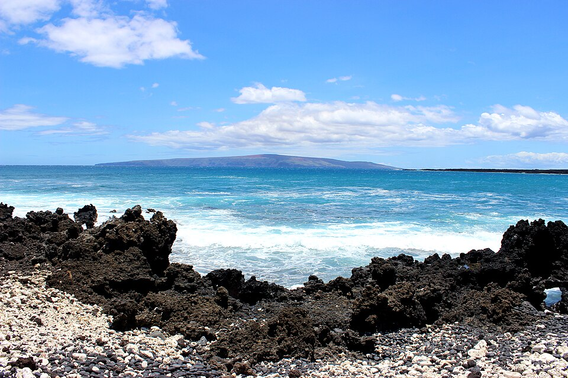

La Pérouse Bay (Keoneʻōʻio)
Place: La Pérouse Bay (Keoneʻōʻio), Honuaʻula, Maui
Type: Coastal bay / historic landing site / cultural landscape
Namesake: Jean-François de Galaup, comte de La Pérouse, French naval explorer who landed on Maui in 1786; traditionally known as Keoneʻōʻio, meaning "sand of the bonefish"
Story it tells: How a Hawaiian fishing community's coastal home became associated with an eighteenth-century French expedition, preserving two names that reflect different chapters of Maui's history.

La Pérouse Bay, traditionally known as Keoneʻōʻio, lies along the rugged southern coast of Maui in Honuaʻula. The Hawaiian name translates to "sand of the bonefish," referring to the ʻōʻio once abundant in the area's coastal waters. Its European name honors Jean-François de Galaup, comte de La Pérouse, a French naval explorer who visited the bay in 1786. The names tell two different stories: one rooted in the resources of the shoreline, the other commemorating a brief encounter during an eighteenth-century voyage of exploration.
Before La Pérouse arrived, Keoneʻōʻio was home to several fishing communities. Families gathered fish and other marine resources from the bay, while nearby freshwater sources and trails connected to nearby communities. The surrounding Honuaʻula region contained fishing shrines, heiau, and other cultural sites, reflecting generations of Hawaiian settlement and stewardship along a coastline that today appears remote and desolate.
On May 29, 1786, La Pérouse arrived aboard the French frigates Boussole and Astrolabe, becoming the first documented European explorer to land on Maui. His crew encountered Hawaiians who traded for iron tools and European goods. La Pérouse recorded observations of the communities and land before continuing his Pacific expedition. The visit was brief, but the French navigator's name became connected to the bay on Western maps, overshadowing the older Hawaiian name.
Today, La Pérouse Bay sits at the end of Mākena Alanui Road, surrounded by jagged lava fields, archaeological sites, and the historic Hoapili Trail, which follows portions of an older coastal route through southern Maui. The lava flows belong to Haleakalā's southwest rift zone and are considerably older than the eighteenth-century eruption once commonly attributed to them. Nearby, the ʻĀhihi-Kīnaʻu Natural Area Reserve protects important coastal and marine habitats. Although the landscape has changed over centuries, the name Keoneʻōʻio continues to preserve the memory of the Hawaiian communities and marine resources that once defined this shoreline.